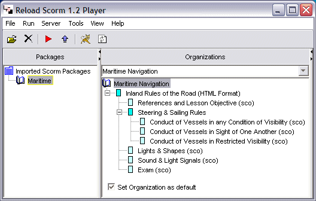
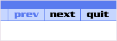

Opening and Playing the Example Package
To open the example package, Click the Import SCORM Package Icon, or click File > Import SCORM Package. You will be asked to provide a name for the package (use Maritime, or anything you wish). You do not need to choose a destination folder, because the files are being unzipped into the Tomcat web server folder. A new entry will appear in the SCORM Packages list, and selecting this entry will display the organisational structure of the Content Package in the Organizations pane (see below).

(note in this screenshot that the CMI Datamodel pane is not visible - individual panes can be hidden and made visible by clicking on the small arrowheads adjacent to the titles of each pane)
Although you can play only one package at any time, you can load as many packages as you want into the Packages pane (indeed they will persist between sessions unless you specifically delete them from this list.
The organizations pane shows the structure of the SCORM Package. The hierarchical structure reflects the organisation of the content. Clicking the 'Run SCORM Package' button ...

It will also show the currently selected item's title on the left hand side. Clicking on the items in the navigation tree, you will notice that whilst the first (References and Lesson Objective) is available, subsequent content (Conduct of Vessels in any Condition of Visibility) fails to load - instead, a message is displayed reporting that 'This item has prerequisites you have not yet completed.'. This is because the SCORM package has embedded information about the structure of the material that the SCORM Player is using to control access. The prerequisite for access to 'Conduct of Vessels in any Condition of Visibility' is that the student should have completed the section entitled 'References and Lesson Objective'. Clicking back to that page, you will see that there is a 'Done' button at the end of the page.

Clicking this button tells the LMS that this first section has been completed - and access to the next piece of content will be granted. Carry on through the rest of the course, clicking 'Done' or answering questions to progress.
We have now seen how the availability of the content changes as the student moves through the content (becoming available once prerequisites have been met). What is happening in the CMI Datamodel?